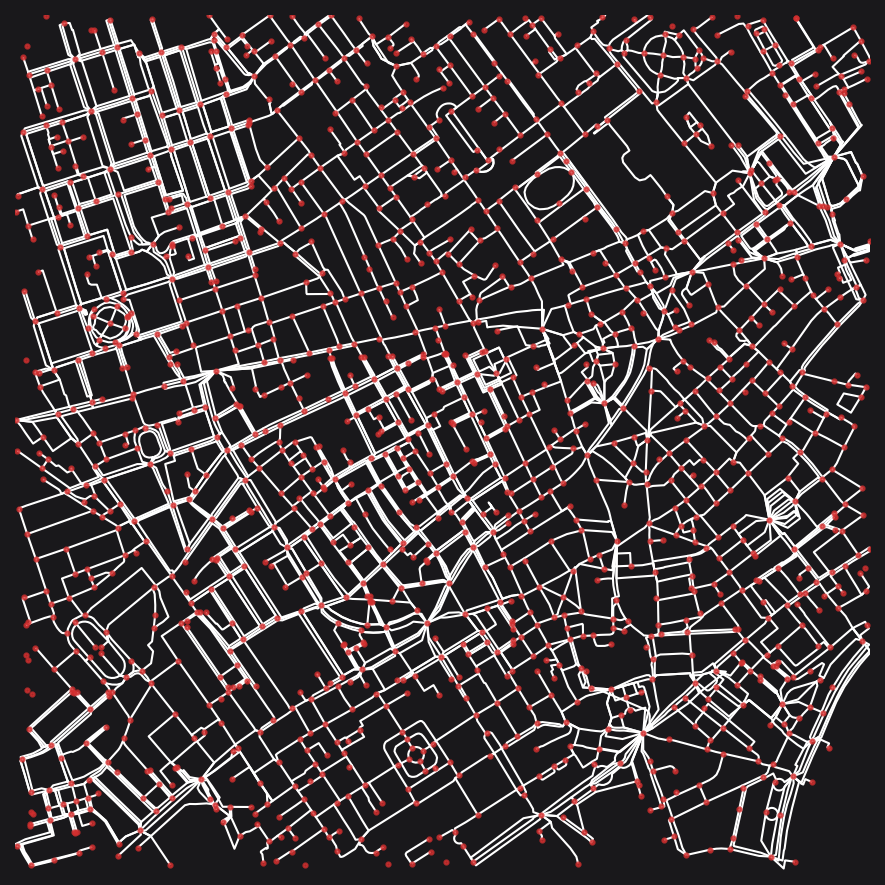
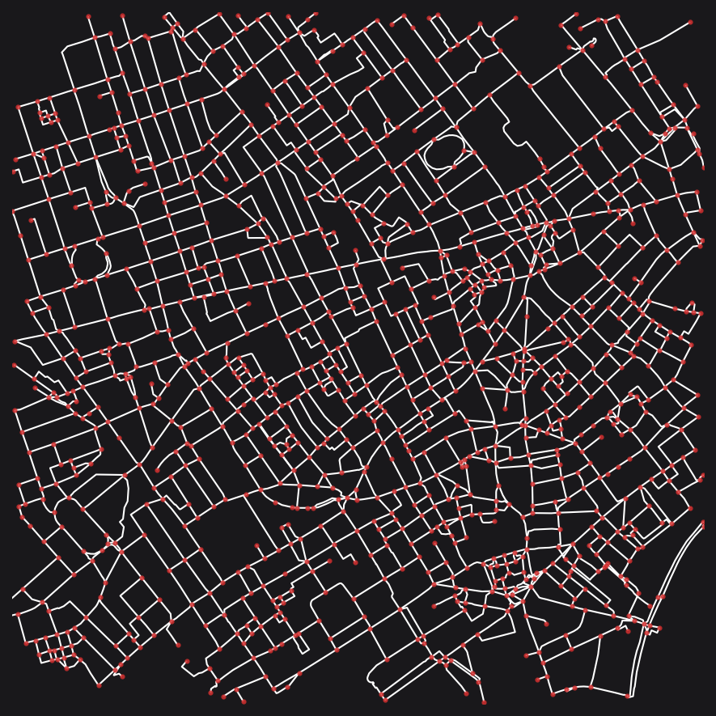

# !pip install --upgrade cityseer
# !pip install osmnxOSM - cityseer
See the accompanying discussion in the guide.
Install and update cityseer if necessary.
Setup
If you’re prepared to get your hands dirty, it is possible to directly query the OSM API and to then use this data to create a cityseer graph. This can be preferred in situations where you want detailed control over the structure of the OSM API query. However, if you prefer, OSM data can also be retrieved with OSMnx and then converted into a cityseer compatible networkX graph.
The following example makes use of data for London Soho.
import osmnx as ox
from shapely import geometry
import utm
from cityseer.tools import graphs, plot, io
# centrepoint
lng, lat = -0.13396079424572427, 51.51371088849723
# select extents for plotting
easting, northing = utm.from_latlon(lat, lng)[:2]
buffer_dist = 1250
buffer_poly = geometry.Point(easting, northing).buffer(1000)
min_x, min_y, max_x, max_y = buffer_poly.bounds
# reusable plot function
def simple_plot(_G):
# plot using the selected extents
plot.plot_nx(
_G,
labels=False,
plot_geoms=True,
node_size=4,
edge_width=1,
x_lim=(min_x, max_x),
y_lim=(min_y, max_y),
figsize=(6, 6),
dpi=150,
)
# Let's use OSMnx to fetch an OSM graph
# We'll use the same raw network for both workflows (hence simplify=False)
multi_di_graph_raw = ox.graph_from_point((lat, lng), dist=buffer_dist, simplify=False)Workflow 1
One option is to both download and simplify the data in OSMnx and to then convert the graph from OSMnx to cityseer (per the io.nx_from_osm_nx method).
# Workflow 1: Using OSMnx to prepare the graph
# ============================================
# explicit simplification and consolidation via OSMnx
multi_di_graph_utm = ox.project_graph(multi_di_graph_raw)
multi_di_graph_simpl = ox.simplify_graph(multi_di_graph_utm)
multi_di_graph_cons = ox.consolidate_intersections(
multi_di_graph_simpl, tolerance=10, dead_ends=True
)
# let's use the same plotting function for both scenarios to aid visual comparisons
multi_graph_cons = io.nx_from_osm_nx(multi_di_graph_cons, tolerance=50)
simple_plot(multi_graph_cons)INFO:cityseer.tools.io:Converting OSMnx MultiDiGraph to cityseer MultiGraph.
100%|██████████| 7523/7523 [00:00<00:00, 20731.70it/s]
INFO:cityseer.tools.plot:Preparing graph nodes
INFO:cityseer.tools.plot:Preparing graph edges
100%|██████████| 4322/4322 [00:00<00:00, 59611.25it/s]
Workflow 2
Another option is to simply download the OSM graph directly from within cityseer. The following uses a default OSM query, however, the OSM Overpass API can be used to roll-your-own. See documentation for more information.
# WORKFLOW 2: Using cityseer to download and automatically simplify the graph
# ===========================================================================
poly_wgs, _ = io.buffered_point_poly(lng, lat, buffer_dist)
G_utm = io.osm_graph_from_poly(poly_wgs, simplify=True)
simple_plot(G_utm)INFO:cityseer.tools.io:Converting networkX graph from EPSG code 4326 to EPSG code 32630.
INFO:cityseer.tools.io:Processing node x, y coordinates.
100%|██████████| 14062/14062 [00:00<00:00, 996676.12it/s]
INFO:cityseer.tools.io:Processing edge geom coordinates, if present.
100%|██████████| 15370/15370 [00:00<00:00, 1860987.05it/s]
INFO:cityseer.tools.graphs:Generating interpolated edge geometries.
100%|██████████| 15370/15370 [00:00<00:00, 196620.19it/s]
INFO:cityseer.tools.graphs:Removing filler nodes.
100%|██████████| 14062/14062 [00:00<00:00, 29167.14it/s]
100%|██████████| 7128/7128 [00:00<00:00, 269592.49it/s]
INFO:cityseer.tools.graphs:Removing dangling nodes.
INFO:cityseer.tools.graphs:Removing filler nodes.
100%|██████████| 5479/5479 [00:00<00:00, 1495353.44it/s]
INFO:cityseer.tools.util:Creating edges STR tree.
100%|██████████| 6922/6922 [00:00<00:00, 1515053.61it/s]
INFO:cityseer.tools.graphs:Splitting opposing edges.
100%|██████████| 5479/5479 [00:00<00:00, 37654.03it/s]
INFO:cityseer.tools.graphs:Squashing opposing nodes
INFO:cityseer.tools.graphs:Merging parallel edges within buffer of 25.
100%|██████████| 7012/7012 [00:00<00:00, 199017.85it/s]
INFO:cityseer.tools.util:Creating edges STR tree.
100%|██████████| 6937/6937 [00:00<00:00, 1496317.14it/s]
INFO:cityseer.tools.graphs:Splitting opposing edges.
100%|██████████| 5479/5479 [00:00<00:00, 42838.83it/s]
INFO:cityseer.tools.graphs:Squashing opposing nodes
INFO:cityseer.tools.graphs:Merging parallel edges within buffer of 25.
100%|██████████| 6987/6987 [00:00<00:00, 488150.08it/s]
INFO:cityseer.tools.util:Creating edges STR tree.
100%|██████████| 6986/6986 [00:00<00:00, 52865.72it/s]
INFO:cityseer.tools.graphs:Splitting opposing edges.
100%|██████████| 5479/5479 [00:00<00:00, 42242.65it/s]
INFO:cityseer.tools.graphs:Squashing opposing nodes
INFO:cityseer.tools.graphs:Merging parallel edges within buffer of 25.
100%|██████████| 7026/7026 [00:00<00:00, 516278.55it/s]
INFO:cityseer.tools.util:Creating nodes STR tree
100%|██████████| 5479/5479 [00:00<00:00, 254869.81it/s]
INFO:cityseer.tools.graphs:Consolidating nodes.
100%|██████████| 5479/5479 [00:00<00:00, 47598.38it/s]
INFO:cityseer.tools.graphs:Merging parallel edges within buffer of 25.
100%|██████████| 6317/6317 [00:00<00:00, 156362.20it/s]
INFO:cityseer.tools.graphs:Removing filler nodes.
100%|██████████| 5010/5010 [00:00<00:00, 435765.07it/s]
INFO:cityseer.tools.util:Creating nodes STR tree
100%|██████████| 4909/4909 [00:00<00:00, 253017.91it/s]
INFO:cityseer.tools.graphs:Consolidating nodes.
100%|██████████| 4909/4909 [00:00<00:00, 101597.94it/s]
INFO:cityseer.tools.graphs:Merging parallel edges within buffer of 25.
100%|██████████| 6035/6035 [00:00<00:00, 384643.58it/s]
INFO:cityseer.tools.graphs:Removing filler nodes.
100%|██████████| 4844/4844 [00:00<00:00, 1123677.26it/s]
INFO:cityseer.tools.util:Creating nodes STR tree
100%|██████████| 4835/4835 [00:00<00:00, 246759.79it/s]
INFO:cityseer.tools.graphs:Consolidating nodes.
100%|██████████| 4835/4835 [00:00<00:00, 54683.43it/s]
INFO:cityseer.tools.graphs:Merging parallel edges within buffer of 25.
100%|██████████| 5853/5853 [00:00<00:00, 350223.43it/s]
INFO:cityseer.tools.graphs:Removing filler nodes.
100%|██████████| 4689/4689 [00:00<00:00, 987998.16it/s]
INFO:cityseer.tools.util:Creating edges STR tree.
100%|██████████| 5819/5819 [00:00<00:00, 1792103.31it/s]
INFO:cityseer.tools.graphs:Splitting opposing edges.
100%|██████████| 4674/4674 [00:00<00:00, 40676.79it/s]
INFO:cityseer.tools.graphs:Squashing opposing nodes
INFO:cityseer.tools.graphs:Merging parallel edges within buffer of 25.
100%|██████████| 5859/5859 [00:00<00:00, 450749.78it/s]
INFO:cityseer.tools.util:Creating nodes STR tree
100%|██████████| 4674/4674 [00:00<00:00, 252800.55it/s]
INFO:cityseer.tools.graphs:Consolidating nodes.
100%|██████████| 4674/4674 [00:00<00:00, 15315.56it/s]
INFO:cityseer.tools.graphs:Merging parallel edges within buffer of 25.
100%|██████████| 4458/4458 [00:00<00:00, 121833.86it/s]
INFO:cityseer.tools.util:Creating edges STR tree.
100%|██████████| 4399/4399 [00:00<00:00, 1371190.79it/s]
INFO:cityseer.tools.graphs:Splitting opposing edges.
100%|██████████| 3323/3323 [00:00<00:00, 37278.86it/s]
INFO:cityseer.tools.graphs:Squashing opposing nodes
INFO:cityseer.tools.graphs:Merging parallel edges within buffer of 25.
100%|██████████| 4420/4420 [00:00<00:00, 371467.40it/s]
INFO:cityseer.tools.util:Creating nodes STR tree
100%|██████████| 3323/3323 [00:00<00:00, 228490.18it/s]
INFO:cityseer.tools.graphs:Consolidating nodes.
100%|██████████| 3323/3323 [00:00<00:00, 17319.82it/s]
INFO:cityseer.tools.graphs:Merging parallel edges within buffer of 25.
100%|██████████| 3772/3772 [00:00<00:00, 134820.49it/s]
INFO:cityseer.tools.graphs:Removing filler nodes.
100%|██████████| 2697/2697 [00:00<00:00, 114962.07it/s]
INFO:cityseer.tools.util:Creating nodes STR tree
100%|██████████| 2469/2469 [00:00<00:00, 206487.01it/s]
INFO:cityseer.tools.util:Creating edges STR tree.
100%|██████████| 3480/3480 [00:00<00:00, 1586886.05it/s]
INFO:cityseer.tools.graphs:Snapping gapped endings.
100%|██████████| 2469/2469 [00:00<00:00, 126635.40it/s]
INFO:cityseer.tools.util:Creating edges STR tree.
100%|██████████| 3489/3489 [00:00<00:00, 1662946.21it/s]
INFO:cityseer.tools.graphs:Splitting opposing edges.
100%|██████████| 2469/2469 [00:00<00:00, 17637.47it/s]
INFO:cityseer.tools.graphs:Merging parallel edges within buffer of 25.
100%|██████████| 4130/4130 [00:00<00:00, 292767.64it/s]
INFO:cityseer.tools.graphs:Removing dangling nodes.
100%|██████████| 2846/2846 [00:00<00:00, 729154.55it/s]
INFO:cityseer.tools.graphs:Removing filler nodes.
100%|██████████| 2663/2663 [00:00<00:00, 68093.83it/s]
INFO:cityseer.tools.plot:Preparing graph nodes
INFO:cityseer.tools.plot:Preparing graph edges
100%|██████████| 3534/3534 [00:00<00:00, 50874.60it/s]